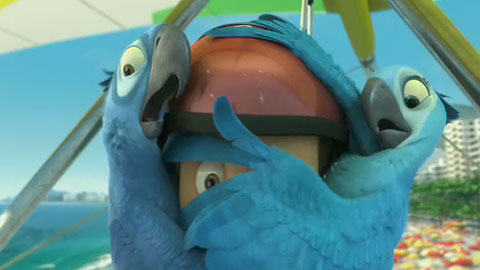

Давно не ходили семьей в кино, но сегодня решили, что сидеть дома — не лучший вид отдыха, а в кинотеатрах идёт «Рио». Почему бы не приобщиться к новинкам мировой анимации?

Последнее время из кемеровских кинотеатров выбирали «Москву», но сегодня, заехав за билетами узнал, что «Москва» 3D-фильмы почему-то не показывает. Хотелось именно 3D, поэтому поехали в «Космос». Купили билеты на 19:10. Итоги культпохода дабы не подбирать деепричастий и связок напишу в виде маркированного списка.
- Мультфильм понравился, яркие краски, весёлая танцевальная музыка хорошее качество 3D (правда заметил, что человек 5 подходили и меняли очки — похоже им приходит износ, раньше такого не наблюдалось)
- Сеанс задержали на 20 минут (не было электричества в штуке, которая показывает кино, то есть в зале было, а в штуке не было). Несмотря на это рекламу нам показали. По этой же причине…
- Не работал буфет. Но буфет не работал, когда я туда пришёл, когда же там тарились пивом окружившие меня потом в зале люди он еще работал
- Звук в синем зале кемеровского киноцентра «Космос» — громкий. Не качественно громкий, ту типа там басы, всё такое, а просто громкий.
- Кроме того, что в синем зале «Космоса» пахло пивом, там еще довольно стойко пахло пОтом. Вероятно люди не поняли, что пришла весна и по привычке ходят в медвежьих шубах, а на улице тепло. А потом они приходят в культурное место, чтобы культурные люди испытали назальный шок. Пахло реально как в конюшне. В общем чуть не стал социопатом.